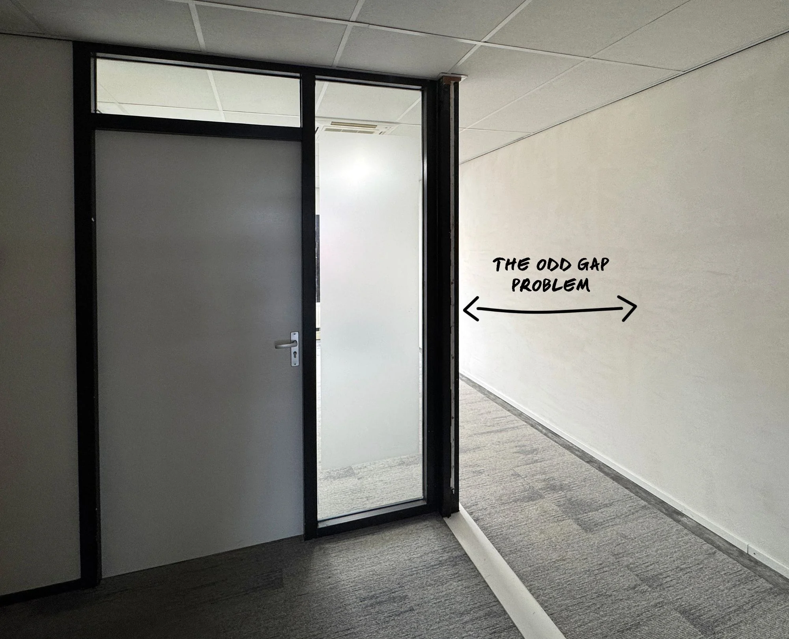
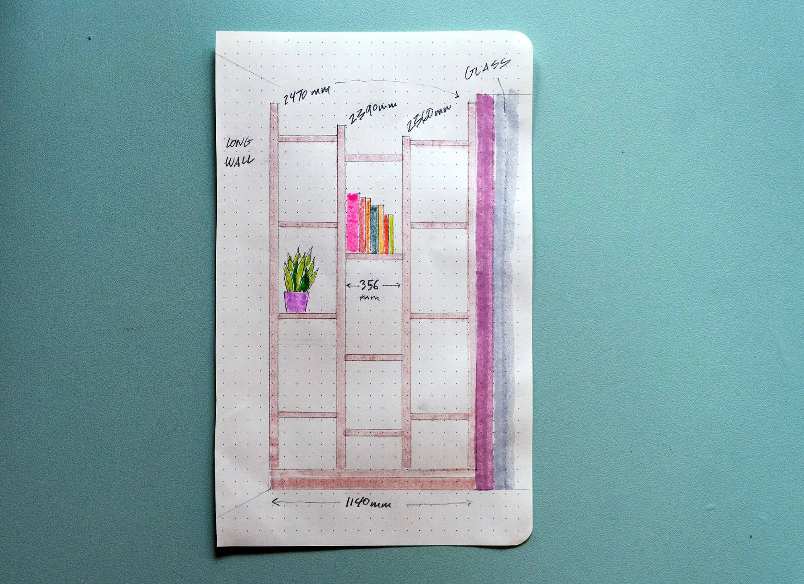
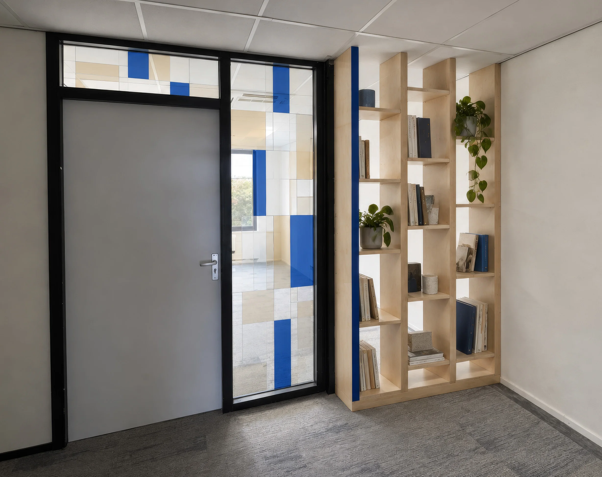
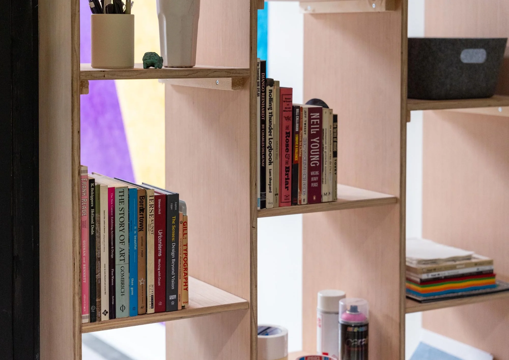
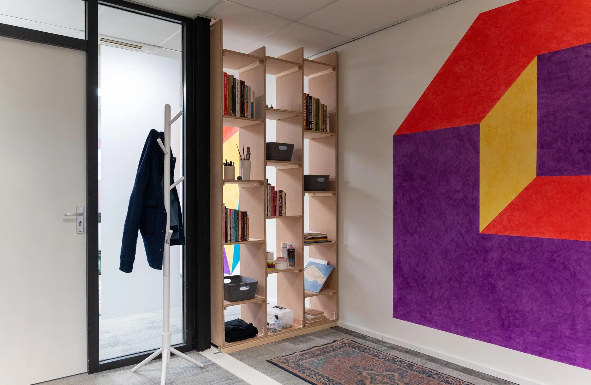
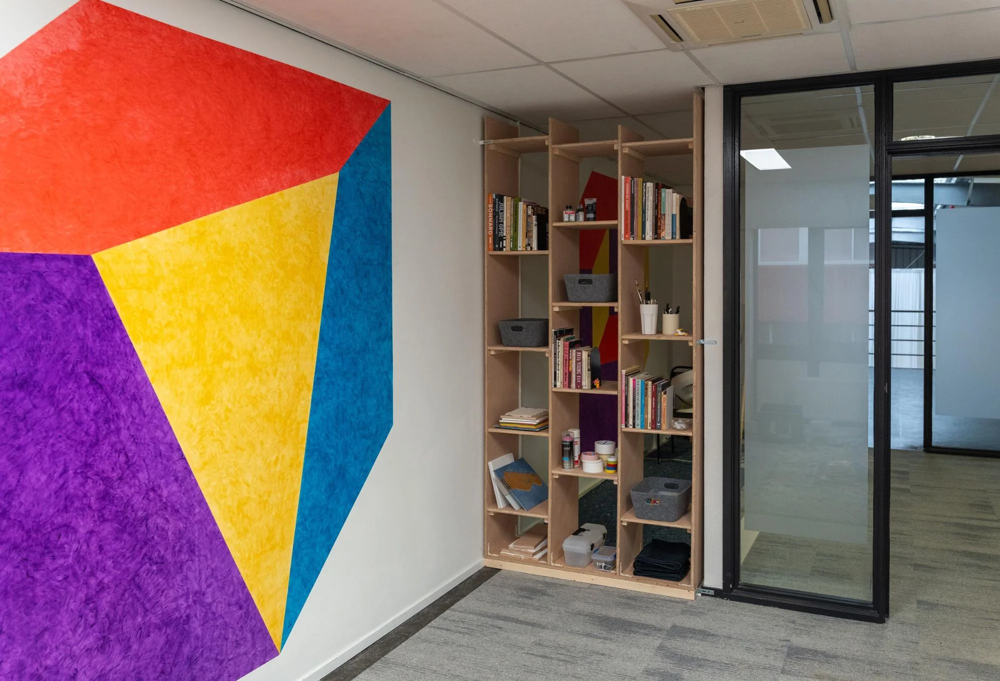

Custom designed bookshelf
I recently found myself a studio in a delightfully scrappy warehouse here in Amsterdam. The only problem was my space had an odd gap where there should be a wall.

I decided to build a custom open bookshelf to close off the space and provide a bit of storage as well (and I love having books around). I began sketching.

The first sketch, working out the staggered shelves and dimensions.
Then I iterated with ChatGPT to convert my sketch into an in-situ render. It took a few goes, but the final outcome was impressive.

The final render, in situ.
Given this was my first foray into bookshelf fabrication, I was worried about it leaning or becoming wobbly under the weight of books, especially over time. Each shelf ended up supported by cleats or shelf pegs and screws, with plenty of brackets holding everything together. It’s probably more robust than it needs to be. Next time I’d be a bit more minimalist with the fixings, but for what I needed, it worked really well.

Cleats, pegs and screws at every shelf.
I often sketch and design physical elements, but I’m usually a step removed from the architectural software and further still from fabrication. Taking this bookshelf through the whole cycle myself was more fun than I expected.

The finished shelf, closing the gap.

In use, beside the mural.
Now I just need to decide if I paint it.